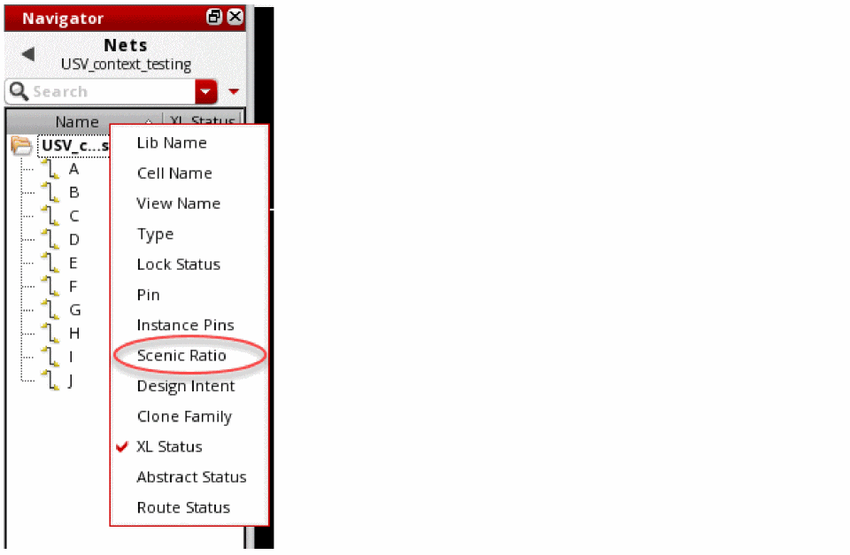
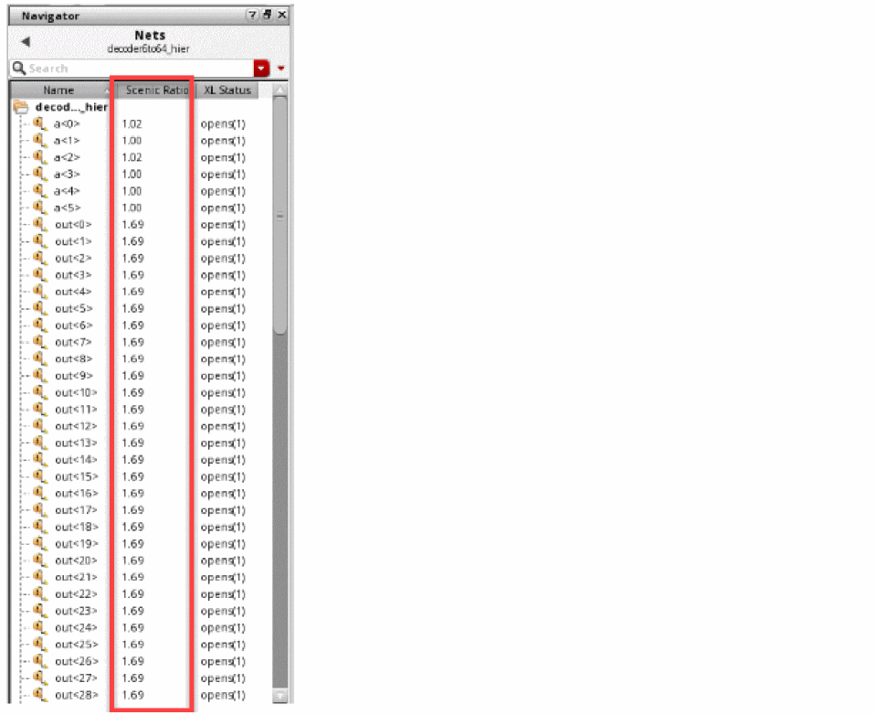

Managing Scenic Ratio
Scenic ratio is used to determine how close the value is to the ideal route when comparing the route in isolation without any congestion penalties, versus the result when all nets are routed and congestion modifies the taken path. When the value of the scenic ratio is close to 1, it means that the global route is accurate. The nets on which congestion analysis is not run displays the value of the scenic ratio as 0.
Displaying the Scenic Ratio
To view the value of the scenic ratio for a net:
-
Click the Congestion Analysis
 icon to run congestion analysis.
icon to run congestion analysis. - Choose Window – Assistants – Navigator Assistant.
-
Right-click a column header in the Navigator Assistant.
A drop-down menu is displayed.
 -
Click Scenic Ratio from the drop-down list.
The Scenic Ratio column is displayed in the Navigator Assistant pane. This column displays the value of the scenic ratio for all nets in the design.

Sorting Scenic Ratio
You can sort the scenic ratio of nets in ascending or descending order. To sort the scenic ratio, click the Scenic Ratio column header. Clicking the column header the first time would display the scenic ratio of nets in the ascending order. This means that the net with the least value is displayed at the top of the table. When you click the column header the next time, the scenic ratio of nets is displayed in the descending order.
Modifying Scenic Ratio
You can modify the scenic ratio of a net by setting the global bias constraint on a net and then rerunning congestion analysis. When congestion analysis is rerun, the value of the scenic ratio may change for other nets as well.
Related Topics
Displaying the Congestion Analysis Assistant
Uses of the Congestion Analysis Assistant
Toggling Congestion Map Visibility
Return to top